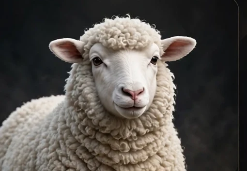
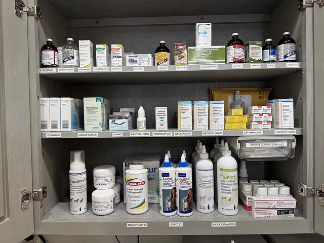
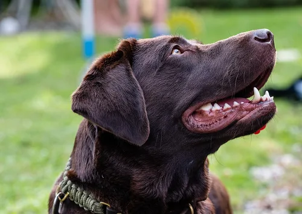
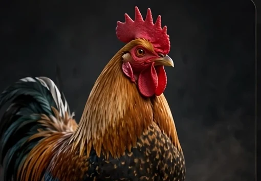

أبحاث مميزة
عرض المزيد
أحدث المقالات
عرض المزيد
الذكاء الاصطناعي في التشخيص البيطري الحديث: ماذا وجد تركيب أدلة من 39 دراسة؟
مراجعة تركيبية لأدبيات التشخيص بالذكاء الاصطناعي عبر الأنواع الحيوانية، مع مؤشر VTRI الأولي للجاهزية الترجمة — منشور مفتوح الوصول على Zenodo وSSRN، بقلم د. عبد الناصر محجوبي.

الكيس العذري (داء المشوكات) في الجزائر: دورة حياة تُكسَر بثلاث عادات بسيطة

الإجهاد الحراري في الأبقار الحلوب: من الفسيولوجيا إلى بروتوكول المزرعة الكامل

مقاومة المضادات الحيوية: أخطر أزمة صامتة في الطب البيطري والبشري معًا

برنامج تلقيح الجراء والقطط الصغيرة: الجدول الكامل والمنطق العلمي خلفه

الأمن الحيوي في مزارع الدواجن الصغيرة: اثنتا عشرة قاعدة ذهبية

صحة الفم والأسنان في الكلاب والقطط: المرض الصامت الذي يقصّر العمر
لا نتائج مطابقة لبحثك.
شاهد وجرّب
عرض المزيد

المكتبة والاختبارات
عرض المزيدالمكتبة العلمية 990+
عرض المزيد


أدوات ومسارات
عرض المزيدالنشرة البحثية
جديد الأبحاث والمقالات عند النشر فقط — تصل إلى بريدك بلا إزعاج.